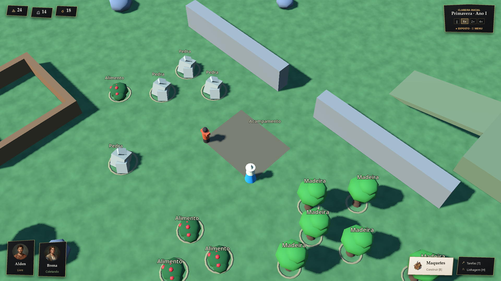

D2 Original — Marcos de Pedra e Eclipse

Mockup artístico escolhido pelo proprietário (`design/ui-0-r2-identity` @ `f138177`): 3 pedras escalonadas de recursos, placa superior chanfrada de topo em cumeeira, duas estelas inclinadas separadas (Alden e Brena) e laje de alabastro Maquetes + bloco de basalto Tarefas/Linhagem.
D2.1 — Composição Alterada (Reprovada)

A R2.1 alterou a identidade escolhida: fundiu os 3 recursos numa faixa única com 3 caixas internas e rótulos extras, trocou a placa superior por um retângulo inclinado, fundiu Alden e Brena num díptico colado com coroa circular e alterou proporções/textos.
D2 Restaurada — Captura Real da Engine

Captura real executada na Godot 4.7.2 sobre o 3D vivo usando Atlas 2D pré-assado com as silhuetas exatas da D2 original, os 5 ícones originais, a textura de basalto kintsugi sutil (sem linhas cruzando texto) e proporção calibrada para 1920×1080.